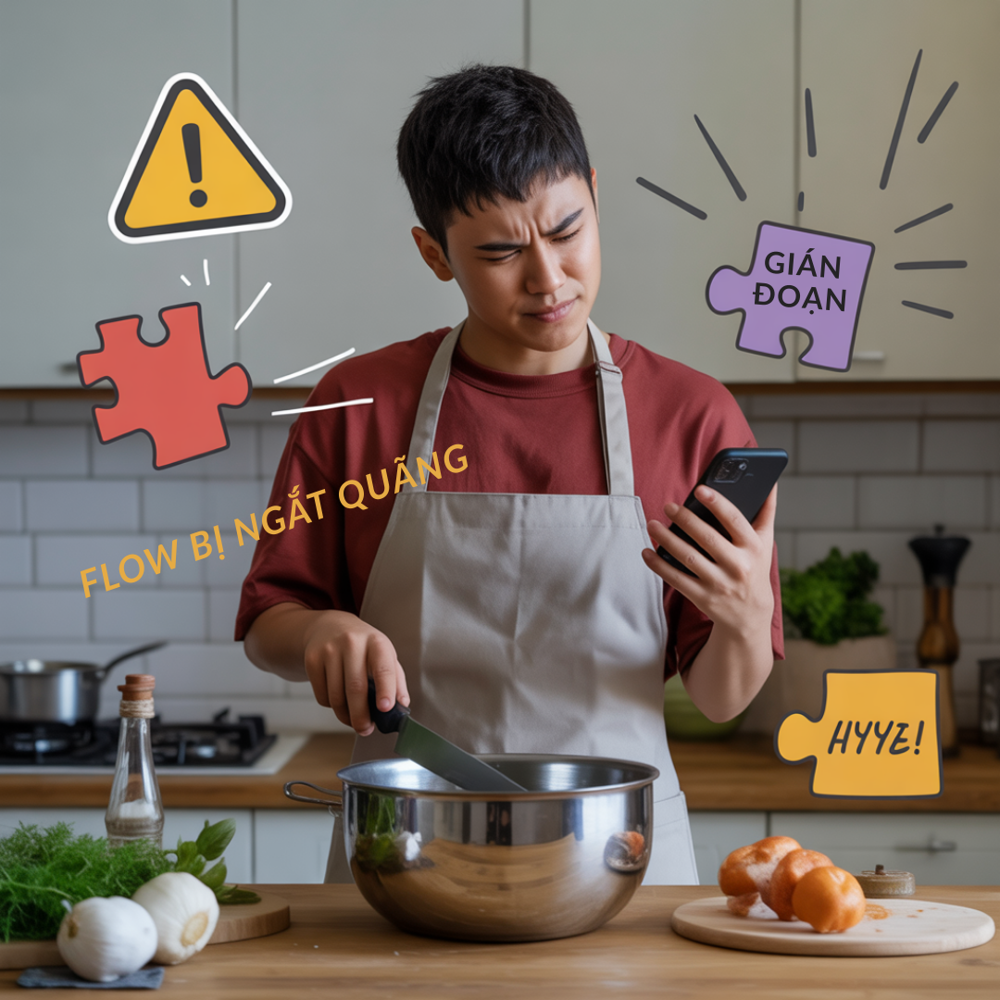
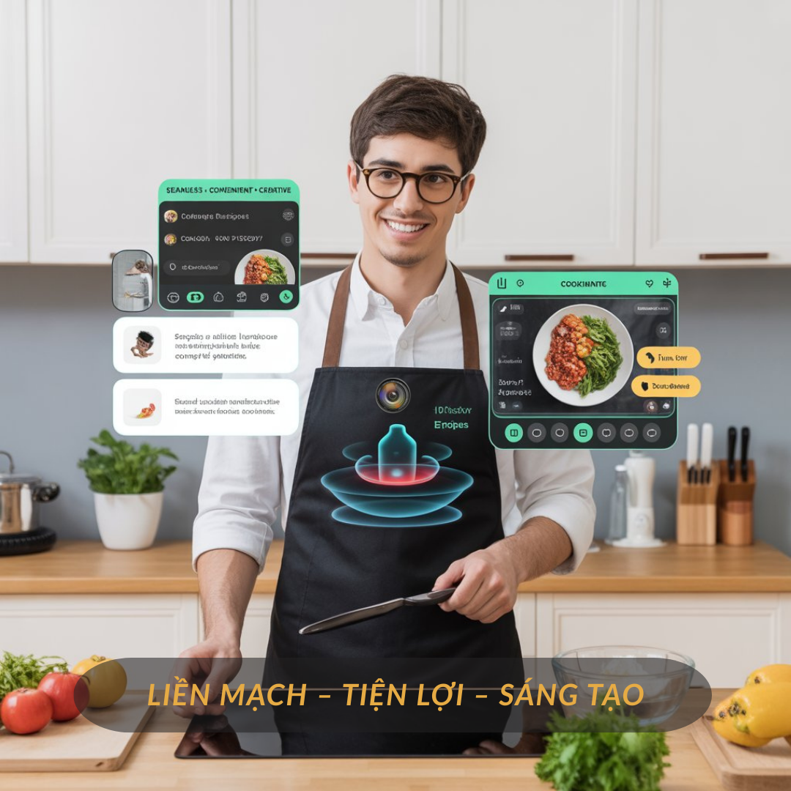

Gen Z và trào lưu “Cooking Flow”: Nấu ăn không chỉ là nghĩa vụ mà là cảm hứng liền mạch

Đối với Gen Z, nấu ăn ngày nay không chỉ đơn thuần là chuẩn bị một bữa ăn. Đó còn là cách để thể hiện cá tính, giải tỏa căng thẳng và tận hưởng những khoảnh khắc sáng tạo. Một khảo sát mới đây cho thấy, 65% bạn trẻ Việt nấu ăn ít nhất 3 lần/tuần, nhưng đa phần vẫn mong muốn có thêm công cụ để giúp trải nghiệm bếp núc trở nên tiện lợi và “mượt mà” hơn.
Khi “flow” bị đứt giữa gian bếp

Dù đam mê nấu nướng, nhiều bạn trẻ vẫn thường xuyên gặp tình huống mất hứng: đang sơ chế thì thiếu nguyên liệu, đang nấu thì quên bước, hoặc phải liên tục cầm điện thoại để tra cứu công thức. Những gián đoạn này khiến quá trình nấu ăn trở nên ngắt quãng, mất đi sự hào hứng ban đầu.
Chính vì vậy, một trào lưu mới mang tên “Cooking Flow” đang lan tỏa trong cộng đồng yêu bếp. Đây là cách nhìn nhận nấu ăn như một hành trình liền mạch, nơi mọi bước đều nối tiếp nhau một cách tự nhiên – giống như chơi nhạc hay vẽ tranh. Với Cooking Flow, căn bếp không chỉ là nơi “nấu cho xong”, mà trở thành không gian sáng tạo, truyền cảm hứng và giữ nhịp năng lượng tích cực.
Công nghệ giúp giữ trọn cảm hứng

Để bắt kịp xu hướng này, nhiều thương hiệu đã nhanh chóng giới thiệu những giải pháp hỗ trợ trải nghiệm nấu ăn. Trong đó, Cookmate AR gây chú ý khi kết hợp công nghệ thực tế tăng cường (AR) vào một chiếc tạp dề thông minh.
Chỉ cần mặc Cookmate AR, người dùng có thể nhìn thấy công thức nổi ngay trong không gian bếp, được hướng dẫn trực quan bằng hình ảnh và video AR. Sản phẩm còn cho phép điều khiển bằng giọng nói để rảnh tay thao tác, đồng thời gợi ý món ăn dựa trên nguyên liệu sẵn có. Nhờ đó, quá trình nấu ăn trở nên mượt mà từ đầu đến cuối, không còn gián đoạn bởi việc quên bước hay phải liên tục tra cứu.
Nấu ăn – từ nghĩa vụ thành phong cách sống
Đại diện Cookmate chia sẻ:
“Chúng tôi nhận thấy Gen Z có nhu cầu rất lớn trong việc biến bếp núc thành không gian sáng tạo. Cookmate AR chính là người bạn đồng hành, giúp các bạn giữ trọn cảm hứng trong từng bữa ăn.”
Có thể thấy, với Gen Z, nấu ăn đang vượt ra khỏi khuôn khổ của một nghĩa vụ hàng ngày. Khi được hỗ trợ bởi công nghệ và cảm hứng sáng tạo, mỗi bữa ăn trở thành một “tác phẩm” và mỗi căn bếp trở thành một “sân khấu nhỏ”. Trào lưu Cooking Flow không chỉ phản ánh phong cách sống mới của giới trẻ, mà còn mở ra hướng đi cho những công nghệ gắn liền với đời sống hàng ngày.